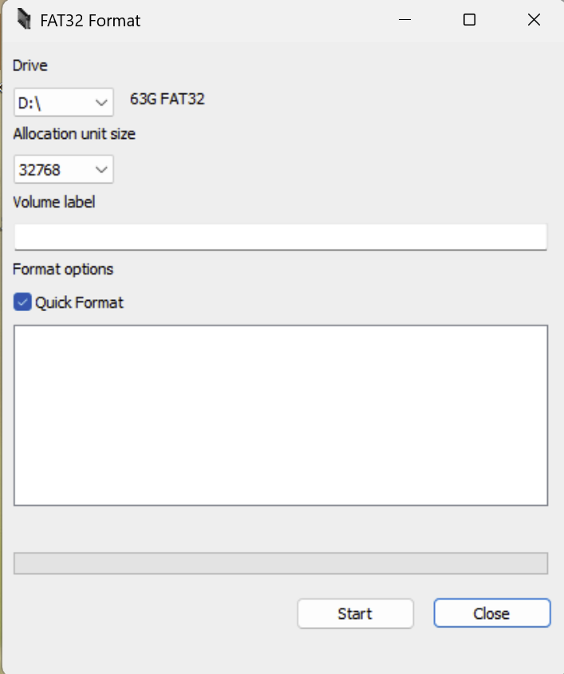

aroout and pr3
MicroSD Card Setup (Windows Guide)
For the sake of keeping this guide simple, the steps are exactly the same for people with MicroSD Cards smaller than 32 gigabytes.
- Download FAT32Format and run the program.
- Plug in your MicroSD Card into your computer. Make sure that it is not an empty partition. If it is, format it using Disk Management to exFAT or any other file format.
-
Select your MicroSD Card in the "Drive" menu, and then select the allocation size to "32768".
 - Press the "Start" button and wait until the process is complete.
- You can now eject the MicroSD Card, and move on to the next page.
For a Linux guide, please look below.
MicroSD Card Setup (Linux Guide using GParted)
This guide is for MicroSD cards under 32GB.
For the further sake of simplicity, a GUI tool is intentionally used. You may also want to back up any important files on your MicroSD card before formatting.- As the Windows guide specifies, plug your MicroSD card into your computer.
- Update your Linux system with
sudo apt update,sudo pacman -Syu, orsudo yum update. - Install GParted with
sudo apt install gparted,sudo pacman -Sy gparted, orsudo yum install gparted, and run it with root privileges withsudo gparted. -
Select your device in the dropdown located at the top right corner of the GParted home screen.

-
Right-click the partition, select "Format to", then select "fat32".

-
Click the green check mark to apply all operations, then "Apply" at the warning dialog. Let it complete.

- Click "Close" when the operation is completed. Now you're free to move onto the next page!
For a macOS guide, please look below.
MicroSD Card Setup (MacOS Guide Using Disk Utility)
This works for 32GB MicroSD cards, and possibly >32GB MicroSD cards.
- Insert your MicroSD card into your MacOS device.
- Open Disk Utility, which is preinstalled on MacOS.
-
Select the MicroSD card, and click on "Erase" in the top toolbar. Make sure it's the correct MicroSD card!

-
Give the MicroSD card a name, and format it for "MS-DOS (FAT)"; otherwise, "ExFAT" may be sufficient.

-
To securely format the MicroSD card, open "Security Options" and adjust the slider to your preference.

- Click "Erase" to format your MicroSD card.